Graphs are used most often in DataWindow objects—the data for the graph comes from tables in the database.
Graphs in DataWindow objects are tied directly to the data that is in the DataWindow object. As the data changes, the graph is automatically updated to reflect the new values.
You can use graphs in DataWindow objects in two ways:
 To place a graph in a DataWindow object:
To place a graph in a DataWindow object:
Open or create the DataWindow object that will contain the graph.
Select Insert>Control>Graph from the menu bar.
Click where you want the graph.
PowerBuilder displays the Graph Data dialog box:
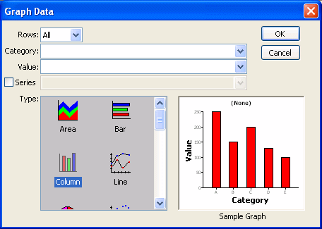
Specify which columns contain the data and the type of graph you want, and click OK.
For more information, see "Associating data with a graph".
The Design view now contains a representation of the graph:
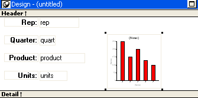
Specify the graph's properties in the Properties view.
A graph has a Properties view in which you can specify the data as well as the other properties of the graph.
 To display the graph's Properties view:
To display the graph's Properties view:
Select Properties from the graph's pop-up menu.
The Properties view for a graph has seven property pages in which you specify information about the graph. Table 26-3 lists the property pages and describes what each property page specifies.
When you first place a graph in a DataWindow object, it is in the foreground—it sits above the bands in the DataWindow object. Unless you change this setting, the graph displays in front of any retrieved data.
The initial graph is also moveable and resizable, so users have complete flexibility as to the size and location of a graph at runtime. You can change these properties.
 To specify a graph's position and size:
To specify a graph's position and size:
Select Properties from the graph's pop-up menu and then select the Position page or the General page in the Properties view.
Select the settings for the following options on the Position property page:
| Setting | Meaning |
|---|---|
| Layer | Background — The
graph displays behind other elements in the DataWindow object. Band — The graph displays in one particular band. If you choose this setting, you should resize the band to fit the graph. Often you will want to place a graph in the Footer band. As users scroll through rows in the DataWindow object, the graph remains at the bottom of the screen as part of the footer. Foreground — (Default) The graph displays above all other elements in the DataWindow object. Typically, if you choose this setting, you also make the graph movable so it will not obscure data while users display the DataWindow object. |
| Moveable | The graph can be moved in the Preview view and at runtime. |
| Resizable | The graph can be resized in the Preview view and at runtime. |
| Slide Left, Slide Up | The graph slides to the left or up to remove extra white space. For more information, see "Sliding controls to remove blank space in a DataWindow object". |
| X, Y | The location of the upper-left corner of the graph. |
| Width, Height | The width and height of the graph. |
Select the settings for the following options on the General property page:
When using a graph in a DataWindow object, you associate axes of the graph with columns in the DataWindow object.
The only way to get data into a graph in a DataWindow object is through columns in the DataWindow object. You cannot add, modify, or delete data in the graph except by adding, modifying, or deleting data in the DataWindow object.
You can graph data from any columns retrieved into the DataWindow object. The columns do not have to be displayed.
 About the examples The process of specifying data for a graph is illustrated below using the Printer table
in the EAS Demo DB.
About the examples The process of specifying data for a graph is illustrated below using the Printer table
in the EAS Demo DB.
 To specify data for a graph:
To specify data for a graph:
If you are creating a new graph, the Graph Data dialog box displays. Otherwise, select Properties from the graph's pop-up menu and select the Data tab in the Properties view.
Fill in the boxes as described in the sections that follow, and click OK.
The Rows drop-down list allows you to specify which rows of data are graphed at any one time:
 If you select Group If you are graphing data in the current group in a grouped DataWindow object and
have several groups displayed at the same time, you should localize
the graph in a group-related band in the Design view. This makes
clear which group the graph represents. Usually, the group header
band is the most appropriate band.
If you select Group If you are graphing data in the current group in a grouped DataWindow object and
have several groups displayed at the same time, you should localize
the graph in a group-related band in the Design view. This makes
clear which group the graph represents. Usually, the group header
band is the most appropriate band.
Specify the column or expression whose values determine the categories. In the Graph Data page in the Graph dialog box and on the Data page in the Properties view, you can select a column name from a drop-down list. In the Data tab, you can also type an expression:
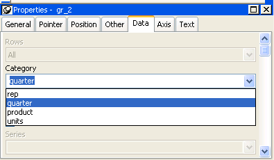
There is an entry along the Category axis for each different value of the column or expression you specify.
 Using display values of data If you are graphing columns that use code tables, when data
is stored with a data value but displayed to users with more
meaningful display values, by default the graph uses the column's
data values. To have the graph use a column's display values,
use the LookupDisplay DataWindow expression function when specifying
Category or Series. LookupDisplay returns a string that
matches the display value for a column:
Using display values of data If you are graphing columns that use code tables, when data
is stored with a data value but displayed to users with more
meaningful display values, by default the graph uses the column's
data values. To have the graph use a column's display values,
use the LookupDisplay DataWindow expression function when specifying
Category or Series. LookupDisplay returns a string that
matches the display value for a column:
LookupDisplay ( column )For more about code tables, see "Defining a code table". For more about LookupDisplay, see the DataWindow Reference .
PowerBuilder populates the Value drop-down list. The list includes the names of all the retrieved columns as well as the following aggregate functions:
Select an item from the drop-down list or type an expression (in the Properties view). For example, if you want to graph the sum of units sold, you can specify:
sum(units for graph)
To graph 110 percent of the sum of units sold, you can specify:
sum(units*1.1 for graph)
Graphs can have one or more series.
If you want only one series (that is, if you want to graph all retrieved rows as one series of values), leave the Series box empty.
If you want to graph more than one series, select the Series check box and specify the column that will provide the series values.
You can select column names from the drop-down list:
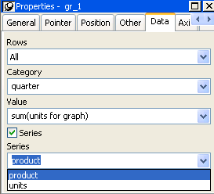
There is a set of data points for each different value of the column you specify here. For example, if you specify in the Series box a column that has 10 values, then your graph will have 10 series: one set of data points for each different value of the column.
You can also specify expressions for Series (on the Data page of the Properties view). For example, you could specify the following for Series:
Units / 1000
In this case, if a table had unit values of 10,000, 20,000, and 30,000, the graph would show series values of 10, 20, and 30.
You can specify more than one of the retrieved columns to serve as series. Separate multiple entries by commas.
You must specify the same number of entries in the Value box as you do in the Series box. The first value in the Value box corresponds to the first series identified in the Series box, the second value corresponds to the second series, and so on. The example about graphing actual and projected sales in "Examples" illustrates this technique.
This section shows how to specify the data for several different graphs of the data in the Printer table in the EAS Demo DB. The table records quarterly unit sales of three printers by three sales representatives.
To graph total sales of printers in each quarter, retrieve all the columns into a DataWindow object and create a graph with the following settings on the Data page in the Properties view:
Leave the Series check box and text box empty.
The Quarter column serves as the category. Because the Quarter column has four values (Q1, Q2, Q3, and Q4), there will be four categories along the Category axis. You want only one series (total sales in each quarter), so you can leave the Series box empty, or type a string literal to identify the series in a legend. Setting Value to sum(units for graph) graphs total sales in each quarter.
Here is the resulting column graph. PowerBuilder automatically generates the category text based on the data in the table:
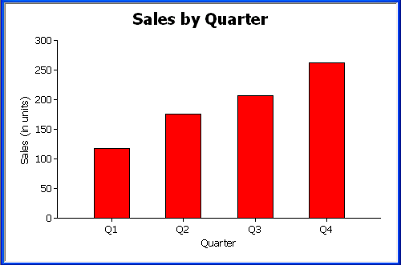
In the preceding graph, there is one set of data points (one series) across four quarters (the category values).
The following is a pie graph, which has exactly the same properties as the preceding column graph except for the type, which is 3D Pie:
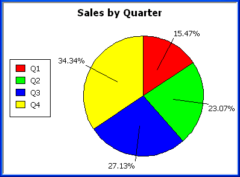
In pie graphs, categories are shown in the legend.
To graph total quarterly sales of each printer, retrieve all the columns into a DataWindow object and create a graph with the following settings on the Data page in the Properties view:
You want a different series for each printer, so the column Product serves as the series. Because the Product column has three values (Cosmic, Galactic, and Stellar), there will be three series in the graph. As in the first example, you want a value for each quarter, so the Quarter column serves as the category, and you want to graph total sales in each quarter, so the Value box is specified as sum(units for graph).
Here is the resulting graph. PowerBuilder automatically generates the category and series labels based on the data in the table. The series labels display in the graph's legend:
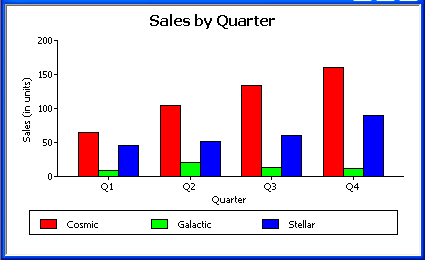
To graph quarterly sales made by each representative, create a graph with the following settings on the Data page in the Properties view:
Here is the resulting graph:
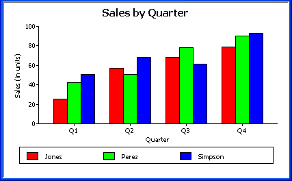
To graph quarterly sales made by each representative, plus total sales for each printer, create a graph with the following settings on the Data page in the Properties view:
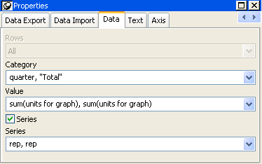
Here you have two types of categories: the first is Quarter, which shows quarterly sales, as in the previous graph. You also want a category for total sales. There is no corresponding column in the DataWindow object, so you can simply type the literal "Total" to identify the category. You separate multiple entries with a comma.
For each of these category types, you want to graph the sum of units sold for each representative, so the Value and Series values are repeated.
Here is the resulting graph:
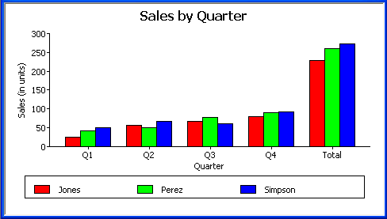
Notice that PowerBuilder uses the literal "Total" supplied in the Category box in the Graph Data window as a value in the Category axis.
To graph total quarterly sales of all printers and projected sales for next year, create a graph with the following settings on the Data page in the Properties view (you assume that sales will increase by 10% next year):
You are using labels to identify two series, Actual and Projected. Note the single quotation marks around the literals. For Values, you enter the expressions that correspond to Actual and Projected sales. For Actual, you use the same expression as in the examples above, sum(units for graph). For Projected sales, you multiply each unit sale by 1.1 to get the 10 percent increase. Therefore, the second expression is sum(units*1.1 for graph).
Here is the resulting graph. PowerBuilder uses the literals you typed for the series as the series labels in the legend:
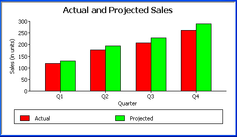
It is often useful to call special attention to one of the series in a graph, particularly in a bar or column graph. You can do that by defining the series as an overlay. An overlay series is graphed as a line on top of the other series in the graph. To define a series as an overlay, define it as follows:
"@overlay~t" + ColumnName
"@overlay~tSeriesLabel "
To graph sales in each quarter and overlay the sales of each individual printer, specify the graph's data as in "Graphing unit sales of each printer", but use the following expression in the Series box:
"Total Sales", "@overlay~t" + product
Here is the resulting graph:
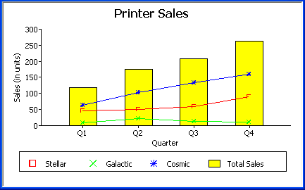
To graph unit sales of printers by quarter and overlay the largest sale made in each quarter, change the Value expression to this:
sum(units for graph), max(units for graph)
Change the Series expression to this:
"Total Sales", "@overlay~tLargets Sale"
Here is the resulting graph:
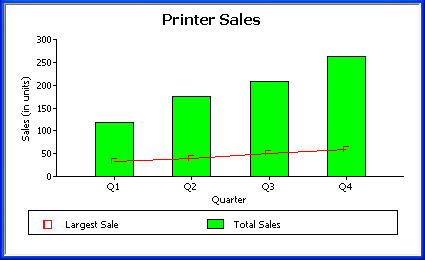